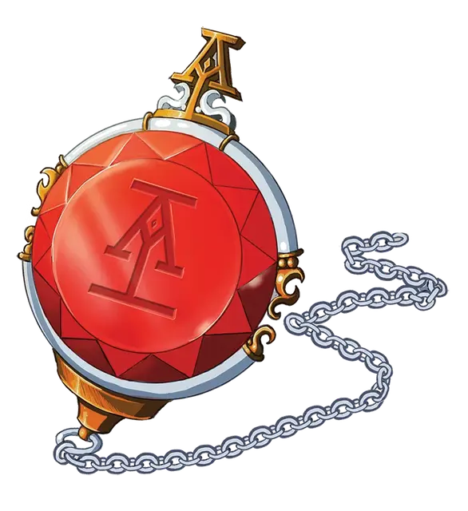

Камень послания
Sending Stone
Чудесный предмет, необычный

Рекомендованная стоимость 101-500 зм
При получении 1-го ранга вам предоставляют в пользование камень послания Acquisitions Incorporated, необычный магический предмет, который напоминает драгоценный камень в дерзкой оправе. Он функционирует как типичные камни послания [sending stones] , за исключением того, что он не имеет соответствующего камня и позволяет общаться с Головным офисом, конкретными секретарями, которых вы знаете, и секретарями, ближайшими к вашему местоположению. Вы должны преуспеть в проверке Интеллекта (Магия) Сл 15, чтобы установить контакт. После того, как камень успешно используется, он не может быть использован снова до следующего рассвета.
Установление контакта с другим секретарем предполагает, что они владеют своими собственными камнями послания.
Особенности вашего камня послания
| к8 | Особенность |
| 1 | Это перевернутый камень. |
| 2 | Связь хорошо ловит везде, кроме вашего штаба. |
| 3 | Иногда он захватывает другие магические разговоры. |
| 4 | Его оптимальный размер, форма и вес делают его идеальным для использования в качестве попрыгунчика. |
| 5 | При использовании он нагревается, однажды он так нагрелся, что прожег ваши перчатки. |
| 6 | У него неприятный рингтон, который вы никак не можете понять, как изменить. |
| 7 | Он не уведомляет вас о входящих сообщениях, за исключением слабого пульсирующего свечения. |
| 8 | Он активируется голосом, так что каждый раз, когда вы разговариваете с кем-то, он пытается отправить сообщение кому-то другому. |
Сарафанное радио. При получении 2-го ранга, когда ваша франшиза начинает крупный квест или миссию, вы можете совершить проверку Интеллекта (История) Сл 15. При успехе вы можете узнать до трёх слухов, связанных с существами или организациями, участвующими в миссии, приходящие к вам через ваш камень послания. Эти слухи отражают текущие или исторические знания, которыми обладает компания Acquisitions Incorporated или многочисленные контакты организации.
Улучшенное сарафанное радио. При получении 3-го ранга, когда вы используете свойство «Сарафанное радио», Мастер даёт вам представление о том, какие части конкретного слуха являются неточными, если таковые имеются. Вы не обязательно узнаете правду за этими ложными слухами.